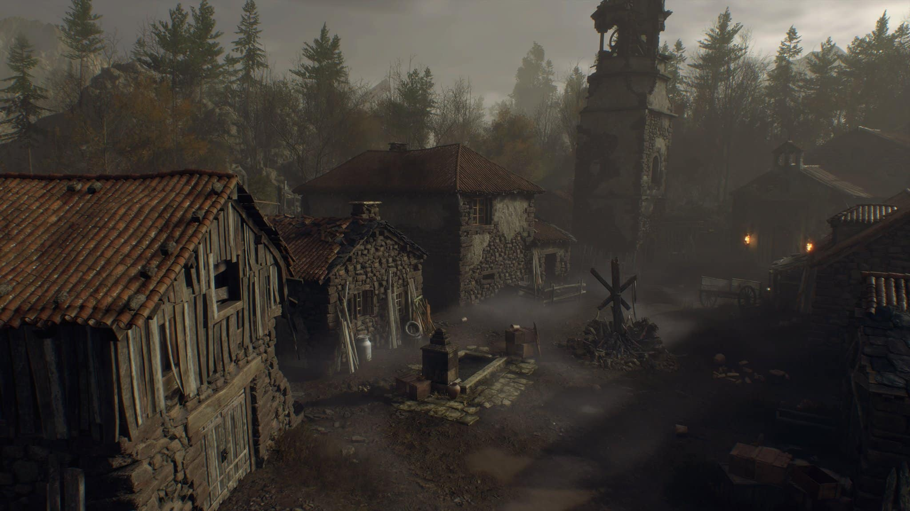
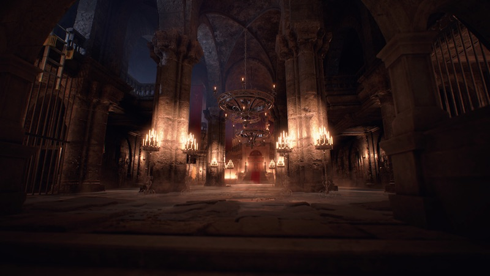
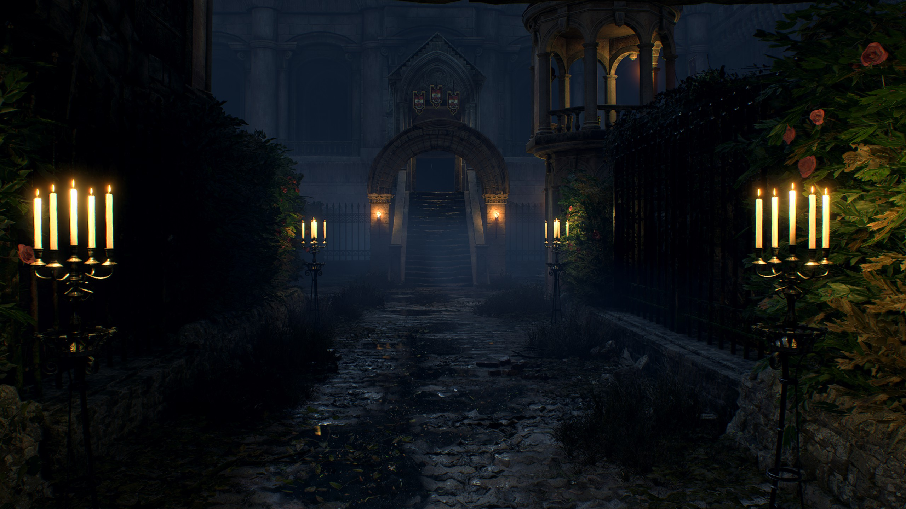
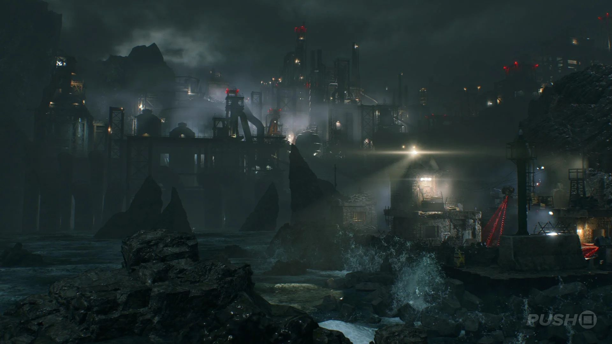

Resident Evil 4 takes place after the destruction of Raccoon City in Resident Evil 2. Leon S. Kennedy returns in this game now as a trained U.S government special agent. This game introduces a new threat called the Las Plagas parasite that controls a host while keeping their intelligence. The cult behind this parasite is called the Los Illuminados and is the main antagonist group in this game. This game shifts the setting from an urban America to a rural area in Spain. This game marks the turning point of the Resident Evil franchise as it shifts away from horror and turns more toward action combat. Resident Evil 4 is widely considered one of if not the best Resident Evil game and is one of the most influential games ever made as it redefined third person shooters in its era.
The story starts with Leon arriving in Spain after the President's daughter gets kidnapped and brought there. He arrives to a hostile village where he gets attacked by the towns people infected with the parasite which acts as a hive mind connected to the head of the Los Illuminados. After getting through the village Leon arrives at a church where he finds Ashley who is the president's daughter. After finding out they are both infected they make their way to a big castle hoping to find a cure and a way off back to the US. After meeting a reformed Umbrella Corporation worker named Luis who tells them about a cure, they make their way to a militarized island. On this island Luis is killed by Leon's former mentor and Leon is forced to fight and kill him. Aftet this they find a lab where they are both cured of the parasite and also find a boat which they can use to escape. Before escaping however, Leon is forced to fight and kill Osmund Saddler who is the head of the Los Illuminados with the help of Ada Wong who also makes a return in this game working for Albert Wesker to obtain a sample of the parasite. After killing Osmund Saddler Leon and Ashley escape the island and make their way back to the United States.



